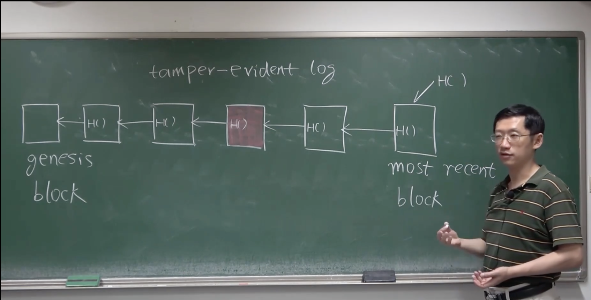
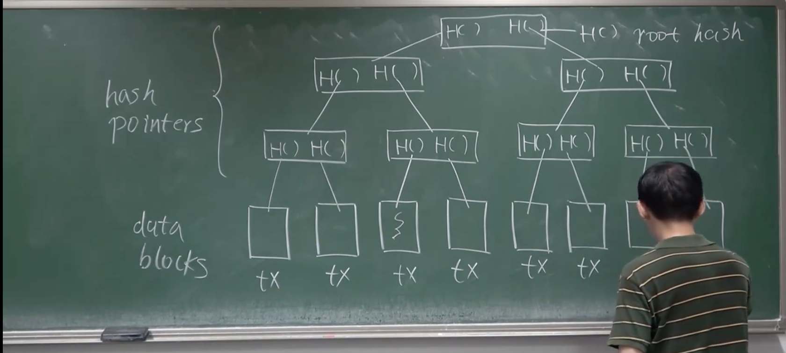

北京大学 肖臻老师《区块链技术与应用》#
炒币有风险，投资需谨慎#
课程视频链接：区块链技术与应用，
课程资料链接：课程资料
01 - 课程简介#
计算机基础：数组、链表、二叉树、哈希函数
参考资料#
- Bitcoin and Cryptocurrency Technologies（有点过时）
- 以太坊白皮书、以太坊黄皮书、源代码
- Solidity文档
教学大纲：比特币#
- 密码学基础
- 比特币的数据结构
- 共识协议和系统实现
- 挖矿算法和难度调整
- 比特币脚本
- 软分叉和硬分叉
- 匿名和隐私保护
02 - 密码学原理#
Crypto-currency 加密货币（但是其实不加密）
密码学中哈希函数#
cryptograhpic hash function，重要性质有
- (1) collision resistance：如果有两个输入 x\not=y, \ H(x) = H(y)，此时出现 hash collision，一般来说，哈希碰撞是不可避免的。比方说输出空间是 256位，即 2^{256}，但是输入空间是无限大，那么这里根据抽屉原理，一定会有哈希碰撞。所以这里的 collision resistance 意思并不是完全不会有碰撞发生，而是不会有人为的、有效的制造数据的方法，使得能产哈希碰撞。
- collision resistance 用法（Digest）：有一个消息 m，如果有人修改 m 为 m'，那么 H(m) \not= H(m') 就会被检测出来。
- collision resistance 无法被证明，只是实验上无法被证伪
- 例子：MD5 之前被认为是非常安全的哈希函数，但是已经被证明并不是 collision resistance
- (2) hiding：x\rightarrow H(x)，已知 H(x)，无法知道 x。hiding 成立性质，brute force 情况下输入空间够大、H(x) 取值足够均匀（不是集中）
- hiding 作用是和 collision resistance 在一起实现 Digital Commitment，也称为 Digital equivalent of a sealed envelope
- 假设有一个人，他预测股票很准，那么怎么能证明他预测的很准呢？1. 他在电视上公布他的预测结果，查看当天的结果。但是这样会出现他的预测对股市的影响的后果。所以，预测结果不能提前公开。2. 如果不公开预测结果，那么如果知道预测是否被篡改？利用 sealed envelope，将预测结果交给第三方机构，然后预测结束之后，再打开。
- (3) puzzle friendly：只观测输出，无法知道输入。
- 例子，观测输出 00...0XX...X，那么我们并无法知道哪个输入更有可能得到该输出。
- 挖矿实际上就是找一个 nonce，使得 H(\text{block header}) \leq target，block header 区块链块头，挖矿的过程没有捷径，所以挖到了矿找到了 nonce，实际上就证明你有一定工作量。Difficult to solve, but but easy to verify
比特币中使用的哈希函数：SHA - 256#
SHA，Secure Hash Algorithm，满足以上三个性质的算法
比特币开户#
- 日常生活中开户：带上身份证明去银行办理开户手续。（中心化）
- 比特币，则是去中心化。每个用户自己决定开户。用户创立一对 publick key 和 private key （去中心化）
加密体系算法： Asymmetric Encryption Algorithm
Symmetric Encryption Algorithm
- 如果两个人进行通讯，可能被监听，那么双方使用相同的加密体系，以这种解码方式，来进行通讯。
- 弱点：密钥的分发不方便
非对称：
- 加密和解密都使用接收方的公钥和私钥
- 信息发送方，只需要使用信息接收方的公钥加密，然后信息接收方使用私钥解密即可
签名
- 某 A 发送给某 B，那么就需要有验证，验证即签名。
- 用 A 的 public key 和 private key 来验证
问题：某人偷取比特币，大量的生成公钥和私钥，然后来偷取比特币。
回答：概率上非常低。但前提是，需要有一个好的随机源来生成 public key 和 private key。
03 - 比特币中的数据结构#
哈希指针 Hash Pointer#
hash pointer 保存的数据有：
- 存储结构体在内存中的地址
- 保存结构体的哈希值
区块链#

- 区块 + 链表
- 区块链即：使用哈希指针，代替普通指针。
- 区块链可以实现 tamper-evident log。比如：某人篡改了区块链中的某个内容，则后段哈希指针的内容对不上，就需要改后一个哈希指针，以此类推（链表）。那么只要保存最后一个区块的哈希指针，所有的区块的内容，都能被保存。
Merkle Tree#

与 binary tree 的区别为用 hash pointer 来代替普通指针
- 叶子结点称为 Data Blocks
- 所有非叶子结点，均只含有 hash pointer
- 根结点的哈希指针称为 root hash
- 下方的 TX 为 transaction，交易
好处：
- 只要记录根结点的哈希值，那么就可以记录、维护整个树的数据
Merkle Proof#
Block header（有根哈希值，但没有交易的具体内容） 和 Block body（有交易的内容）
比特币中的节点分为两类：
- 全节点，保存整个区块的内容
- 轻节点，只保存 block header，（类似手机）
Merkle Proof：验证交易完成方法流程
- 找到当前交易的叶子结点
- 从当前节点到根节点的路径，就叫为 merkle proof
- 轻节点，只保存了根哈希值，那么轻节点如何知道当前交易是否包含在当前 merkle tree 内？
- 轻节点向全节点进行请求：全节点按照 merkle proof 的路径，按顺序计算，每个节点都和轻节点进行比对，然后最后返回根节点的哈希值。如果所有哈希值都正确，那么交易就被包含。
Merkle Proof 的证明是 Proof of membership 和 Proof of inclusion，Merkle Proof 的时间复杂度是 O(N) 的
如何证明 Proof of non-membership？
- brute force，整棵树的叶子结点都放进去，这样是 O(N) 的
- 我们如果对叶节点的哈希值排序，那么就可以用二分搜索去证明，就是 O(logN)，代价为排序，Sorted Merkle Tree
有环数据结构#
如果是循环链表 + hash pointer，则会出现问题，会出现循环依赖（因为区块链的 hash pointer 与上一个相关）
所以区块链中，不能使用有环数据结构。
04 - 比特币协议#
去中心化以及协议#
数字货币和纸质的区别：纸质货币无法被复制，数字货币的复制却很简单（Double Spending Attack）
去中心化的货币，要解决的问题：
- 谁来决定发放？也即通货膨胀问题（之后会涉及到，挖矿的问题比特币）
- 交易的有效性
例子：用户 A 获得了发行比特币的权利（铸币，coinbase transaction，获得比特币的方式）。A 转给了 B 和 C；B 转给了 C 和 D；C 又转给了 E。
- 为何要有币的来源验证？证明比特币不是凭空捏造的，也是为了防止 double spending
- A 要给 B 转钱，那么 A 要知道 B 的地址，如何才能知道 B 的比特币地址（类似银行账户）？
- 而且 A 要证明 A 确实有这么多的钱，所以 A 的公钥也要被发布。如果有 B‘ 声明用 B’ 的公钥来代替 A 的公钥，然后假装说 A 转给了 B 的钱，那么 A 的比特币就被偷走了（因为 A 的公钥是公开的）。但是会有来源 check，所以不会被允许。

Block Header#
包含区块链中宏观的信息：
- 协议版本 version
- 包含的区块链中，前一个的指针 hash of previous block header
- 根哈希 merkle root hash
- 挖矿难度目标阈值 target，H(\text{block header})\leq target
- 随机数 nonce
Block Body#
包含的具体信息：
- 交易列表 transaction list
Full Node#
全节点
保证交易信息，也被称为 fully validating node
Light Node#
轻节点
只保存 block header 的信息，一般来说，无法独立验证交易。
系统中大部分都是轻节点，全节点较少。
分布式共识#
Ditributed Consensus，简单的例子是 distributed hash table
比如说，在我本地是 'xiao'\rightarrow 12345，那么需要在其他的地方，也存储这么一个 key - value 的 pair
分布式理论1 FLP impossibility result。在一个异步系统 asynchronous 里，即使只有一个成员是 faulty，也无法达成共识
分布式理论2 CAP Theorem（consistency， availability，partition tolerance）。任何一个分布式系统，这三个性质当中，最多只能满足两个。
Paxos协议，可以保持一致性
比特币协议 Consensus in BitCoin#
假设大部分节点是无恶意，小部分节点是有恶意。
- 投票？某一个节点，提出候选区块，然后开始投票。问题：有些节点不投票；效率问题；membership问题，投票权问题。比如 hyperledger fabric 联盟链，只有大公司可以投票。女巫攻击 sybil attack：有一个超级计算机只产生 membership，超过半数，就可以控制投票结果了
- 比特币使用计算力投票，而不是账户数投票。H(\text{block header})\leq target 不停的尝试不同的 nonce，如果有一台计算机搜索到了合适的 nonce，那么就称该计算机获得了记账权，才有投票的权利。
- 分叉攻击 Forking Attack：有可能有一个发生的交易，被另外的节点覆盖。那么我们有 longest valid chain 规则
- 如果有两个节点，在同时发布了同一个节点，那么等长的两个请求，无法被 longest valid chain 规则区分。那么就有 increasing consensus，就是如果有系统中同时发布区块的情况，等长的临时性分叉会维持一段时间，直至有一个分叉抢先一步先找到下一个分叉。那么另外一个就叫 orphan block，被丢弃。
- Block reward。Coinbase Transaction 是发行新的比特币的唯一方法，其余均为转移。一开始时，每一个区块可以发布 50 BTC，但是协议中规定，21万个区块产生之后会减半，也即 12.5 BTC （2018年）
比特币争夺记账权的说法叫挖矿 mining（寻找nonce的过程），争夺记账权的节点称为矿工